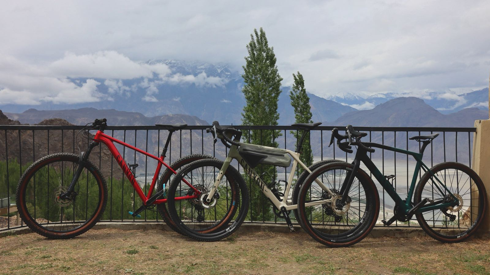
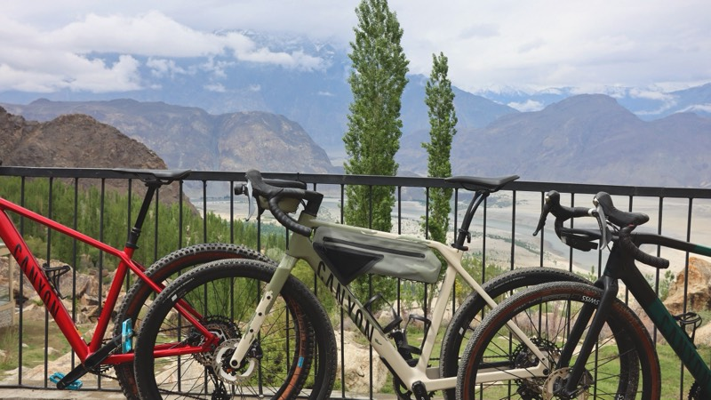
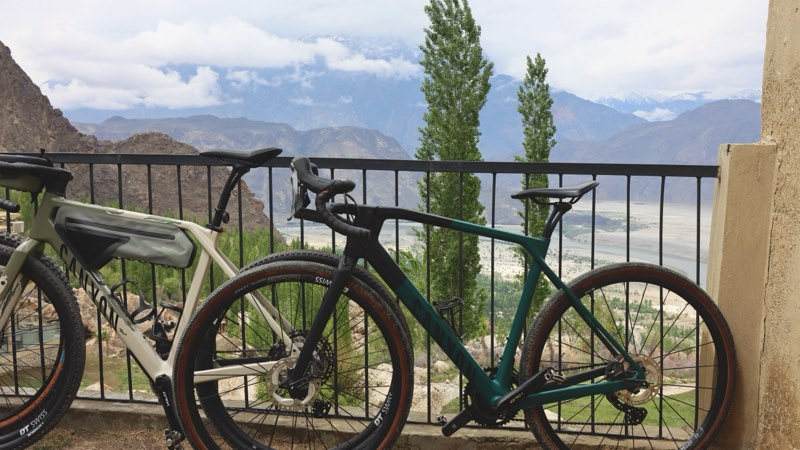
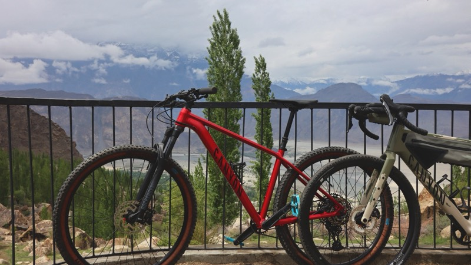

Canyons out front, workhorses behind — a bike for every rider and every road in Baltistan.

Gravel. Built for Baltistan's rough roads.

Gravel. Fast over the long valley miles.

Mountain bike. Happy everywhere else.
Sizes and day rates are a WhatsApp message away — availability shifts with the season, so ask before you fly.
Support vehicle and bike carrier. Where the fleet goes, it goes.